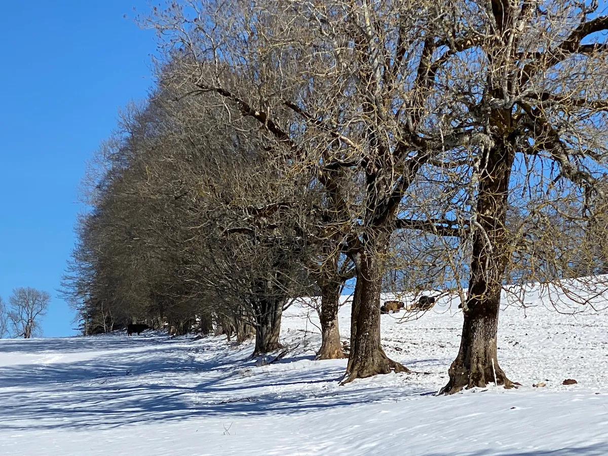
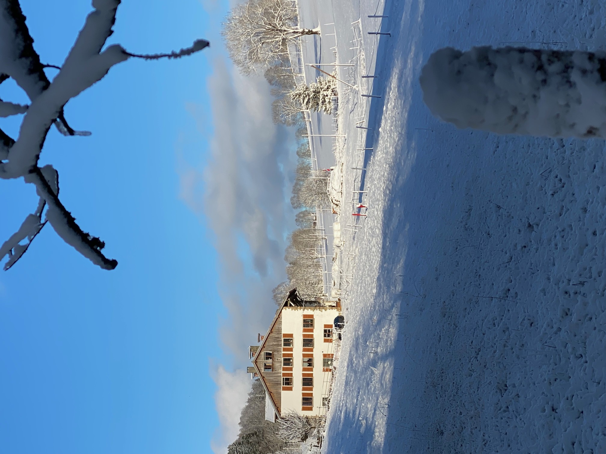

Bienvenue sur ce petit itinéraire de découverte à La Chaux-de-Fonds !
| 📊 Informations | Parcours urbain |
|---|---|
| 📍 Départ / Arrivée | Crêt-du-Locle / Rue Fritz-Courvoisier |
| 🚶♂️ Distance | Environ 1,2 kilomètre |
| ⏱️ Durée estimée | Environ 20 minutes |
| 📈 Difficulté | Facile |
| ✨ Points forts | Horlogerie, urbanisme horloger, découverte locale |
📥 Télécharger le fichier GPX pour votre montre/GPS
Voici le point de départ du parcours. Suivez le tracé pour découvrir l'histoire de la région.

Un endroit parfait pour une petite pause à l'ombre.
